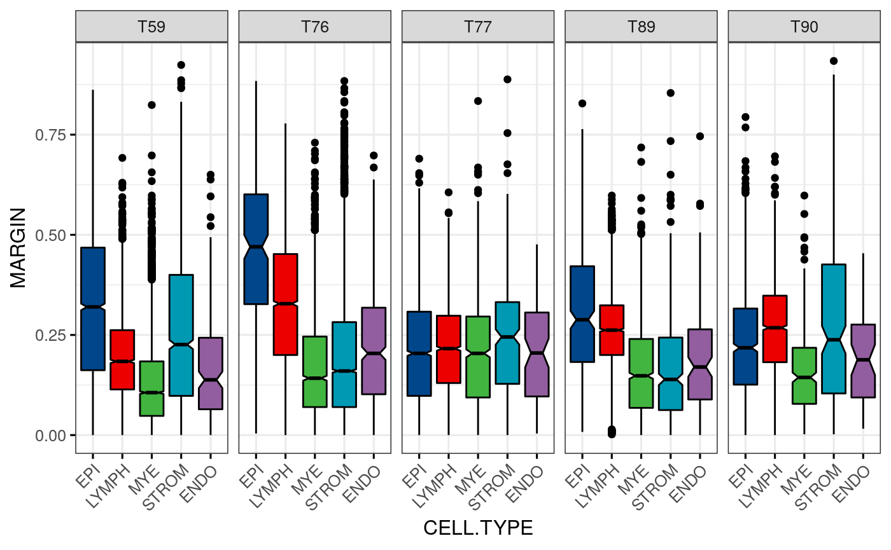
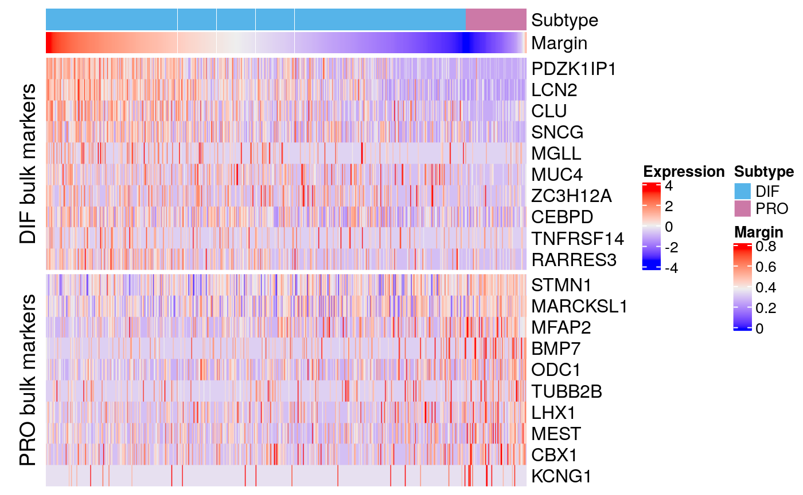

singlecell.RmdSetup
Dependencies:
# OVC library(subtypeHeterogeneity) library(consensusOV) # Single cell library(scater) library(scran) library(DropletUtils) library(SingleR) # Annotation library(EnsDb.Hsapiens.v86) library(org.Hs.eg.db) library(EnrichmentBrowser) # Plotting library(ComplexHeatmap) library(ggpubr)
Constants:
SUBTYPES <- c("DIF", "IMR", "MES", "PRO") CELL.TYPES <- c("EPI", "LYMPH", "MYE", "STROM", "ENDO") data.dir <- system.file("extdata", package = "subtypeHeterogeneity")
Colors
cb.pink <- "#CC79A7" cb.red <- "#D55E00" cb.blue <- "#0072B2" cb.yellow <- "#F0E442" cb.green <- "#009E73" cb.lightblue <- "#56B4E9" cb.orange <- "#E69F00" stcols <- c(cb.lightblue, cb.green, cb.orange, cb.pink) names(stcols) <- SUBTYPES
Parallel computation:
bp <- BiocParallel::registered()[[1]]
Note: The sections Preprocessing, Dimensionsality reduction, and Clustering describe the processing of the CellRanger output files at the example of Tumor T90. Tumors T59, T76, T77, and T89 were processed analogously. Execution of the code in these sections requires download of the CellRanger output files deposited in GEO (accession number: GSE154600).
Section Annotation, Subsection Visualization of results (all tumors), and subsequent sections describe how Figures 4 and 5 of the main manuscript were created. The code is based on the fully processed and annotated SingleCellExperiments (resulting from processing steps described in Section 2 - Section 5.3).
Preprocessing
Read 10X output (required files: matrix.mtx, barcodes.tsv, genes.tsv)
sce <- DropletUtils::read10xCounts("tumor90") dim(sce)
Annotating the rows:
rownames(sce) <- scater::uniquifyFeatureNames(rowData(sce)$ID, rowData(sce)$Symbol) location <- AnnotationDbi::mapIds(EnsDb.Hsapiens.v86, keys = rowData(sce)$ID, column = "SEQNAME", keytype = "GENEID")
Testing for deviations from ambient expression:
bcrank <- DropletUtils::barcodeRanks(counts(sce)) uniq <- !duplicated(bcrank$rank) plot(bcrank$rank[uniq], bcrank$total[uniq], log="xy", xlab="Rank", ylab="Total UMI count", cex.lab=1.2) abline(h=bcrank$inflection, col="darkgreen", lty=2) abline(h=bcrank$knee, col="dodgerblue", lty=2) legend("bottomleft", legend=c("Inflection", "Knee"), col=c("darkgreen", "dodgerblue"), lty=2, cex=1.2)
Quality control on the cells:
df <- scater::perCellQCMetrics(sce, subsets = list(Mito = which(location == "MT")), BPPARAM = bp) par(mfrow = c(1,3)) hist(df$sum/1e3, xlab="Library sizes (thousands)", main="", breaks=20, col="grey80", ylab="Number of cells") hist(df$detected, xlab="Number of expressed genes", main="", breaks=20, col="grey80", ylab="Number of cells") hist(df$subsets_Mito_percent, xlab="Mitochondrial proportion (%)", ylab="Number of cells", breaks=20, main="", col="grey80") par(mfrow = c(1,1)) high.mito <- scater::isOutlier(df$subsets_Mito_percent, nmads = 3, type = "higher") libsize.drop <- scater::isOutlier(df$sum, nmads = 1, type = "lower", log = TRUE) feature.drop <- scater::isOutlier(df$detected, nmads = 1, type = "lower", log = TRUE) sce <- sce[,!(high.mito | libsize.drop | feature.drop)] df <- data.frame(ByHighMito = sum(high.mito), ByLibSize = sum(libsize.drop), ByFeature = sum(feature.drop), Remaining = ncol(sce)) df dim(sce)
Examining gene expression:
ave <- scater::calculateAverage(sce, BPPARAM = bp) hist(log10(ave), breaks = 100, main = "", col = "grey", xlab = expression(Log[10]~"average count"))
Remove genes that have too low average counts
rowData(sce)$AveCount <- ave to.keep <- ave > 0.001 sce <- sce[to.keep,] # Number excluded genes sum(!to.keep) dim(sce)
Library-size normalization:
clusters <- scran::quickCluster(sce, method = "igraph", min.mean = 0.1, BPPARAM = bp) sce <- scran::computeSumFactors(sce, min.mean = 0.1, cluster = clusters, BPPARAM = bp) plot(scater::librarySizeFactors(sce), sizeFactors(sce), pch = 16, xlab = "Library size factors", ylab = "Deconvolution factors", log = "xy") sce <- scater::logNormCounts(sce) sce
Dimensionality reduction
Modelling the mean-variance trend:
dec.pbmc <- scran::modelGeneVarByPoisson(sce, BPPARAM = bp) top.pbmc <- scran::getTopHVGs(dec.pbmc, prop = 0.1) plot(dec.pbmc$mean, dec.pbmc$total, pch=16, cex=0.5, xlab="Mean of log-expression", ylab="Variance of log-expression") curfit <- metadata(dec.pbmc) curve(curfit$trend(x), col = 'dodgerblue', add = TRUE, lwd = 2)
Denoise log-expression data by removing principal components corresponding to technical noise (might take a while):
sce <- scran::denoisePCA(sce, subset.row = top.pbmc, technical = dec.pbmc, BPPARAM = bp) ncol(reducedDim(sce, "PCA")) plot(attr(reducedDim(sce), "percentVar"), xlab = "PC", ylab = "Proportion of variance explained") abline(v = ncol(reducedDim(sce, "PCA")), lty = 2, col = "red")
tSNE:
Clustering
Clustering with graph-based methods:
snn.gr <- scran::buildSNNGraph(sce, use.dimred = "PCA", BPPARAM = bp, k = 25) clusters <- igraph::cluster_walktrap(snn.gr) sce$Cluster <- factor(clusters$membership) table(sce$Cluster)
cluster.mod <- scran::clusterModularity(snn.gr, sce$Cluster, get.weights = TRUE) log.ratio <- log2(cluster.mod$observed / cluster.mod$expected + 1) ComplexHeatmap::Heatmap(log.ratio, cluster_rows = FALSE, cluster_columns = FALSE) scater::plotTSNE(sce, colour_by = "Cluster")
Annotation (cell type and consensus subtype)
SingleR cell type annotation
Transfer cell type annotation from reference profiles in the Human Primary Cell Atlas and ENCODE:
hpc <- transferCellType(sce, "hpca") encode <- transferCellType(sce, "encode") sce$hpca.celltype <- hpc$labels sce$encode.celltype <- encode$labels maxScore <- function(res) vapply(1:nrow(res), function(i) res$scores[i, res[i,"labels"]], numeric(1)) sce$hpca.celltype.score <- maxScore(hpc) sce$encode.celltype.score <- maxScore(hpc)
Display main cell types present:
plotMainCellTypes(sce, "hpca.celltype") plotMainCellTypes(sce, "encode.celltype")
Display ambiguity of cell type assignments:
SingleR::plotScoreHeatmap(hpc) SingleR::plotScoreHeatmap(encode)
Marker genes
Adopted from Shih et al., PLoS One (2018):
epithelial <- c("EPCAM", "KRT8", "KRT18", "KRT19") lymphocyte <- c("PTPRC", "CD3E", "CD19", "MS4A1") endothelial <- c("PECAM1", "CD34") fibroblast <- c("ACTA2", "DCN", "ACTB") stromal <- c("THY1", "ENG", "VIM", "CD44") origin <- c("PAX8", "CALB2", "COL11A1") scater::plotTSNE(sce, colour_by = epithelial[1])
consensusOV subtype annotation
sce.entrez <- EnrichmentBrowser::idMap(sce, org = "hsa", from = "SYMBOL", to = "ENTREZID") am <- as.matrix(assay(sce.entrez, "logcounts")) cst <- consensusOV::get.consensus.subtypes(am, names(sce.entrez)) sts <- sub("_consensus$", "", as.vector(cst$consensusOV.subtypes)) sce$subtype <- sts sce$margin <- consensusOV::margin(cst$rf.probs) summary(sce$margin) scater::plotTSNE(sce, colour_by = "subtype") scater::plotTSNE(sce, colour_by = "margin")
Visualization of results (all tumors)
Read the pre-processed 10X data for all tumors as list of SingleCellExperiments.
tumors <- c(59, 76, 77, 89, 90) tags <- c("cu0pxp0sepsvhos", "taff3g6nlmf5yk4", "2otdxfunxnlr6ql", "sojupsrjxnvnf6d", "ydokzcxgkugo678") durl <- "https://dl.dropboxusercontent.com/s/tag/sampleXX_sce.rds"
readSCE <- function(i) { dl <- sub("XX", tumors[i], durl) dl <- sub("tag", tags[i], dl) readRDS(file(dl)) }
## $T59
## class: SingleCellExperiment
## dim: 18079 13040
## metadata(1): log.exprs.offset
## assays(2): counts logcounts
## rownames(18079): AL669831.5 LINC00115 ... AC004556.1 AC240274.1
## rowData names(12): ID Symbol ... log10_total_counts AveCount
## colnames: NULL
## colData names(52): Sample Barcode ... PRO_consensus MES_consensus
## reducedDimNames(2): PCA TSNE
## altExpNames(0):
##
## $T76
## class: SingleCellExperiment
## dim: 17416 13747
## metadata(1): log.exprs.offset
## assays(2): counts logcounts
## rownames(17416): AL669831.5 FAM87B ... AC233755.1 AC240274.1
## rowData names(12): ID Symbol ... log10_total_counts AveCount
## colnames: NULL
## colData names(52): Sample Barcode ... PRO_consensus MES_consensus
## reducedDimNames(2): PCA TSNE
## altExpNames(0):
##
## $T77
## class: SingleCellExperiment
## dim: 18543 6903
## metadata(1): log.exprs.offset
## assays(2): counts logcounts
## rownames(18543): MIR1302-2HG AL669831.5 ... AC233755.1 AC240274.1
## rowData names(12): ID Symbol ... log10_total_counts AveCount
## colnames: NULL
## colData names(59): Sample Barcode ... PRO_consensus MES_consensus
## reducedDimNames(2): PCA TSNE
## altExpNames(0):
##
## $T89
## class: SingleCellExperiment
## dim: 17429 4933
## metadata(1): log.exprs.offset
## assays(2): counts logcounts
## rownames(17429): AL669831.5 LINC00115 ... AC233755.1 AC240274.1
## rowData names(12): ID Symbol ... log10_total_counts AveCount
## colnames: NULL
## colData names(52): Sample Barcode ... PRO_consensus MES_consensus
## reducedDimNames(2): PCA TSNE
## altExpNames(0):
##
## $T90
## class: SingleCellExperiment
## dim: 18011 3630
## metadata(1): Samples
## assays(2): counts logcounts
## rownames(18011): AL627309.1 AL669831.5 ... AC233755.1 AC240274.1
## rowData names(4): ID Symbol NA AveCount
## colnames: NULL
## colData names(15): Sample Barcode ... PRO_consensus MES_consensus
## reducedDimNames(2): PCA TSNE
## altExpNames(0):Summarize cell type annotation:
sces <- lapply(sces, annoCellType)
## T59 T76 T77 T89 T90
## ENDO 186 449 84 127 57
## EPI 3505 212 2889 294 893
## LYMPH 3132 4055 2569 2774 2130
## MYE 4476 2127 1038 1317 329
## STROM 1728 6904 284 418 219## T59 T76 T77 T89 T90
## DIF 9180 9674 5608 4200 3150
## IMR 1745 1323 460 341 223
## MES 1444 2586 167 239 157
## PRO 671 164 668 153 100Display cell type and subtype annotation for one tumor at a time:
p2a <- plotType(sces[[1]]) p2b <- plotType(sces[[1]], type = "subtype") p2 <- ggarrange(p2b + theme_bw() + theme(plot.margin = margin(r = 1)), p2a + theme_bw() + theme(axis.text.y = element_blank(), axis.ticks.y = element_blank(), axis.title.y = element_blank(), plot.margin = margin(l = 1, r=1)), legend = "top", align = "h", labels = c("A", "B")) p2
Facet cell type and subtype visualization for all tumors:
stp <- facetTumors(sces, col = "subtype", pal = stcols) pal <- ggpubr::get_palette("npg", 5) names(pal) <- CELL.TYPES ctp <- facetTumors(sces, col = "celltype", pal = pal) p2 <- ggpubr::ggarrange(stp + theme(axis.text.x = element_blank(), axis.title.x = element_blank()), ctp, nrow = 2, align = "v", labels = c("A", "B"), heights = c(1, 1.2))
Barplot percentage of subtype / cell type for all 10X tumors:
cttab <- vapply(sces, getPerc, numeric(5), perc=FALSE) total <- colSums(cttab) prop.test(cttab["EPI",], total)
##
## 5-sample test for equality of proportions without continuity
## correction
##
## data: cttab["EPI", ] out of total
## X-squared = 6377.8, df = 4, p-value < 2.2e-16
## alternative hypothesis: two.sided
## sample estimates:
## prop 1 prop 2 prop 3 prop 4 prop 5
## 0.26905657 0.01542155 0.42089161 0.05963489 0.24614112prop.test(cttab["STROM",], total)
##
## 5-sample test for equality of proportions without continuity
## correction
##
## data: cttab["STROM", ] out of total
## X-squared = 9102.3, df = 4, p-value < 2.2e-16
## alternative hypothesis: two.sided
## sample estimates:
## prop 1 prop 2 prop 3 prop 4 prop 5
## 0.13264758 0.50221867 0.04137529 0.08478702 0.06036384stbp <- bpType(sces, "subtype", pal = stcols) ctbp <- bpType(sces, "celltype", pal = pal)
Cell type vs subtype matrix:
mat <- getCelltypeSubtypeMatrix(sces) ctstbp <- bpCrossType(mat, pal) ctstbp
Or as matrix plot:
mat <- round(mat / sum(mat) * 100) mat <- mat[,CELL.TYPES] matrixPlot(mat, cnames = c("SUBTYPE", "CELL.TYPE"), high.color = "darkgreen")
p1 <- ggarrange(stbp, ctbp + theme(axis.text.y = element_blank(), axis.title.y = element_blank()), # axis.ticks.x = element_blank(), # axis.line.x = element_blank()), ctstbp + theme(axis.text.y = element_blank(), axis.title.y = element_blank()), nrow = 1, hjust = c(-0.5, 0.5, 0.5), widths = c(1.3,1,1), legend = "none", align = "h", labels = c("C", "D", "E")) p1
Margin scores:
spl.margin <- function(sce, col = "celltype") reshape2::melt(split(sce$margin, sce[[col]])) psces <- lapply(sces, spl.margin) for(i in tumors) psces[[match(i, tumors)]]$tumor <- paste0("T", i) df <- do.call(rbind, psces) colnames(df) <- c("MARGIN", "CELL.TYPE", "TUMOR") df[[2]] <- factor(df[[2]], levels = CELL.TYPES)
Boxplot of margin scores:
ggboxplot(df, x = "CELL.TYPE", y = "MARGIN", width = 0.8, notch = TRUE, fill = "CELL.TYPE", palette = get_palette("lancet", 5), facet.by = "TUMOR", nrow = 1, x.text.angle = 45, legend="none", ggtheme = theme_bw(base_size = 12))

Only epithelial cells:
df <- subset(df, CELL.TYPE == "EPI") bp <- ggboxplot(df, x = "TUMOR", y = "MARGIN", width = 0.8, notch = TRUE, fill = "lightgrey", #cb.red, legend="none", ggtheme = theme_bw(), ylab = "MARGIN (EPI)", font.x = 11, font.y = 11, font.tickslab = c(10, "plain", "black")) # ylim = c(0,1),x.text.angle = 45, df.points <- data.frame(x=1:5, y=c(0.376, 0.766, 0.182, 0.646, 0.214)) bp <- bp + geom_point(data = df.points, aes(x = x, y = y), shape = 8, size = 3) + geom_text(data = df.points[2,], aes(x = x, y = y), label = "Bulk", hjust = 0, nudge_x = 0.1, size = 4) bp
Bulk RNA-seq
durl <- "https://dl.dropboxusercontent.com/s/lit4wok327u1mps" dfile <- file.path(durl, "Bulk_RNAseq_March2020.txt") dat <- read.delim(file(dfile), as.is=TRUE) cpm.ind <- seq_len(which(dat[,1] == "")[1] - 1) cpm.dat <- dat[cpm.ind, 1:8] raw.dat <- dat[,9:16] cpm.sym <- cpm.dat[,1] raw.sym <- raw.dat[,1]
Use pre-computed library size-normalized expression values for subtype assignment:
rownames(cpm.dat) <- cpm.dat[,2] cpm.dat <- cpm.dat[,3:8] colnames(cpm.dat) <- paste0("T", c(59, 77, 76, 89, 90, 91)) cpm.dat <- as.matrix(cpm.dat) mode(cpm.dat) <- "numeric" cpm.se <- SummarizedExperiment(assays = list(cpm = cpm.dat)) cpm.se <- EnrichmentBrowser::idMap(cpm.se, org="hsa", from="ENSEMBL", to="ENTREZID") cpm.file <- file.path(data.dir, "bulk_cpm_subtypes.rds")
cst <- consensusOV::get.consensus.subtypes(assay(cpm.se), names(cpm.se)) saveRDS(cst, file = cpm.file)
cst <- readRDS(cpm.file) cst
## $consensusOV.subtypes
## [1] IMR_consensus PRO_consensus MES_consensus IMR_consensus PRO_consensus
## [6] DIF_consensus
## Levels: IMR_consensus DIF_consensus PRO_consensus MES_consensus
##
## $rf.probs
## IMR_consensus DIF_consensus PRO_consensus MES_consensus
## T59 0.792 0.040 0.014 0.154
## T77 0.284 0.256 0.336 0.124
## T76 0.016 0.008 0.038 0.938
## T89 0.866 0.046 0.008 0.080
## T90 0.092 0.094 0.452 0.362
## T91 0.030 0.962 0.004 0.004
## attr(,"class")
## [1] "matrix" "votes"Sanity check: start from raw read counts
rownames(raw.dat) <- raw.dat[,2] raw.dat <- raw.dat[,3:8] colnames(raw.dat) <- paste0("T", c(59, 77, 76, 89, 90, 91)) raw.dat <- as.matrix(raw.dat) mode(raw.dat) <- "numeric" raw.dat <- edgeR::cpm(raw.dat, log=TRUE) raw.se <- SummarizedExperiment(assays = list(raw = raw.dat)) raw.se <- EnrichmentBrowser::idMap(raw.se, org="hsa", from="ENSEMBL", to="ENTREZID") raw.file <- file.path(data.dir, "bulk_raw_subtypes.rds")
cst2 <- consensusOV::get.consensus.subtypes(assay(raw.se), names(raw.se)) saveRDS(cst2, file = raw.file)
Pretty much the same as when starting from already normalized expression values:
cst2 <- readRDS(raw.file) cst2
## $consensusOV.subtypes
## [1] IMR_consensus PRO_consensus MES_consensus IMR_consensus PRO_consensus
## [6] DIF_consensus
## Levels: IMR_consensus DIF_consensus PRO_consensus MES_consensus
##
## $rf.probs
## IMR_consensus DIF_consensus PRO_consensus MES_consensus
## T59 0.746 0.060 0.024 0.170
## T77 0.272 0.266 0.392 0.070
## T76 0.002 0.002 0.014 0.982
## T89 0.888 0.042 0.014 0.056
## T90 0.066 0.116 0.516 0.302
## T91 0.018 0.952 0.024 0.006
## attr(,"class")
## [1] "matrix" "votes"Contrast bulk and single-cell margins:
mat <- t(cst$rf.probs) rownames(mat) <- sub("_consensus", "", rownames(mat)) mat <- round(mat, digits = 2) mat <- mat[c(3,4,1,2),c(1,3,2,4)]
mat <- rbind(c(0.15, 0.02, 0.5, 0.13, 0.12), c(0.59, 0.03, 0.14, 0.77, 0.07), c(0.22, 0.85, 0.03, 0.08, 0.3), c(0.04, 0.09, 0.32, 0.02, 0.52)) colnames(mat) <- paste0("T", tumors) rownames(mat) <- SUBTYPES mat <- mat[4:1,] mp <- matrixPlot(t(mat), cnames = c("TUMORS", "CLASS.PROB"), bw.thresh = 0.5, gthresh = 0.2) mp <- mp + theme(axis.text.x = element_blank(), axis.title.x = element_blank(), axis.ticks.x = element_blank(), axis.line.x = element_blank(), plot.margin = margin(b = 0)) mp <- mp + ylab("BULK") p0 <- ggarrange(mp, bp, vjust = 0.5, hjust = 0.5, nrow = 2, align = "v", heights = c(1,3), labels = c("F", "")) p0
InferCNV
- tumor 59: 3,500 epithelial cells vs. 9,500 reference (non-epithelial) cells
- tumor 76: 210 epithelial cells vs. 13,500 reference (non-epithelial) cells
- tumor 77: 2,900 epithelial cells vs. 4,000 reference (non-epithelial) cells
- tumor 89: 300 epithelial cells vs. 4,600 reference (non-epithelial) cells
- tumor 90: 900 epithelial cells vs. 2,700 reference (non-epithelial) cells
Prepare input files and execute InferCNV
Prepare input files from a SingleCellExperiment
obj <- generateInferCNVInput(sces[[1]], "tumor59")
Run inferCNV for one tumor at a time (computational intensive, several hours). Best executed on a cluster (here with 20 cores).
# cutoff = 1 works well for Smart-seq2, # cutoff = 0.1 works well for 10x Genomics res <- infercnv::run(obj, cutoff = 0.1, out_dir = "tumor59", num_threads = 20, denoise = TRUE, HMM = TRUE)
Cross-tumor heatmap
Read observation matrix (expression profiles of cancer epithelial cells)
tags <- c("p7r313prargcp3g", "6yunw77zfe4nzgw", "qaop7h1sh2bxm5g", "x469lcpm3rp5dxo", "m56zm2zywjcongz") durl <- "https://dl.dropboxusercontent.com/s/tag/TXX_infercnv.observations.rds"
readObsMat <- function(i) { dl <- sub("XX", tumors[i], durl) dl <- sub("tag", tags[i], dl) readRDS(file(dl)) }
Subset and annotate cells:
for(i in seq_along(tumors)) obs.mats[[i]] <- subsetObservations(obs.mats[[i]], sces[[i]]) ra <- getCellAnnotation(sces, obs.mats)
Create union of genes featured in the inferCNV output of each tumor, extend individual observations as needed, and create a combined observation matrix storing the information across all tumors:
un <- Reduce(union, lapply(obs.mats, rownames)) obs.mats <- lapply(obs.mats, extendObservations, un = un) obs.mat <- do.call(cbind, lapply(obs.mats, function(o) o[un,]))
Obtain genomic coordinates for the genes in the combined observation matrix:
egenes <- symbols2ranges(rownames(obs.mat)) obs.mat <- obs.mat[names(egenes),] chr <- as.character(seqnames(egenes))
Highlight specific recurrent regions with known driver genes from the TCGA OVC paper:
clabs <- getRecurrentDriverGenes(rownames(obs.mat))
Plot the heatmap:
im <- ComplexHeatmap::Heatmap(t(obs.mat), #top_annotation = ta, right_annotation = ra, name = "Expression", col = circlize::colorRamp2(#c(0.895, 1.105), c("white", "black")), c(0.895, 1, 1.105), c("blue", "white", "red")), row_title_rot = 0, column_title_rot = 90, show_row_names = FALSE, show_column_names = TRUE, cluster_rows = FALSE, cluster_columns = FALSE, row_split = rep(paste0("T", tumors), sapply(obs.mats, ncol)), column_spl = factor(chr, levels = unique(chr)), column_gap = unit(0, "mm"), column_title_gp = gpar(fontsize = 6), column_labels = clabs, column_names_gp = gpar(fontsize = 6), border = TRUE) im <- grid.grabExpr(draw(im)) im
Cell Cycle
Cyclins
Tumor 59
for(i in seq_along(sces)) colnames(sces[[i]]) <- NULL sce59 <- subsetByCellType(sces[[1]], cell.type = "EPI", subtype = c("DIF", "PRO")) sce59
## class: SingleCellExperiment
## dim: 18079 3451
## metadata(1): log.exprs.offset
## assays(2): counts logcounts
## rownames(18079): AL669831.5 LINC00115 ... AC004556.1 AC240274.1
## rowData names(12): ID Symbol ... log10_total_counts AveCount
## colnames: NULL
## colData names(53): Sample Barcode ... MES_consensus sizeFactor
## reducedDimNames(2): PCA TSNE
## altExpNames(0):## [1] "CCNA2" "CCNB1" "CCND3" "CCNE2" "CCND1" "CCND2" "CCNA1" "CCNB2" "CCNE1"markerHeatmap(sce59, cyclin.genes)
bpCyclins(sce59)
## Total EPI-DIF:3016## Total EPI-PRO:435Tumor 77
sce77 <- subsetByCellType(sces[[3]], cell.type = "EPI", subtype = c("DIF", "PRO")) bpCyclins(sce77)
## Total EPI-DIF:2212## Total EPI-PRO:612
Tumor 90
sce90 <- subsetByCellType(sces[[5]], cell.type = "EPI", subtype = c("DIF", "PRO")) bpCyclins(sce90)
## Total EPI-DIF:804## Total EPI-PRO:89Marker genes
Tumor 59
markers59 <- scran::findMarkers(sce59, groups = sce59$subtype) head(markers59$DIF)
## DataFrame with 6 rows and 5 columns
## Top p.value FDR summary.logFC logFC.PRO
## <integer> <numeric> <numeric> <numeric> <numeric>
## PDZK1IP1 1 7.67751e-280 1.38802e-275 1.041291 1.041291
## LCN2 2 6.04990e-183 5.46881e-179 1.442117 1.442117
## RARRES1 3 5.17451e-128 3.11833e-124 1.300031 1.300031
## NNMT 4 2.32691e-92 1.05171e-88 0.966470 0.966470
## SLPI 5 6.69700e-72 2.42150e-68 1.046235 1.046235
## CLU 6 2.45787e-63 7.40599e-60 0.573375 0.573375markers59$DIF["CCND1",]
## DataFrame with 1 row and 5 columns
## Top p.value FDR summary.logFC logFC.PRO
## <integer> <numeric> <numeric> <numeric> <numeric>
## CCND1 69 1.30891e-17 3.42955e-15 -0.41159 -0.41159head(markers59$DIF[markers59$DIF$logFC.PRO < 0,])
## DataFrame with 6 rows and 5 columns
## Top p.value FDR summary.logFC logFC.PRO
## <integer> <numeric> <numeric> <numeric> <numeric>
## STMN1 21 5.90139e-36 5.08053e-33 -0.483398 -0.483398
## MARCKSL1 31 8.51182e-29 4.96404e-26 -0.444471 -0.444471
## MFAP2 38 1.28209e-25 6.09970e-23 -0.375558 -0.375558
## BMP7 41 2.67124e-24 1.17789e-21 -0.305718 -0.305718
## ODC1 53 3.48573e-21 1.18903e-18 -0.388360 -0.388360
## SOX4 56 1.17824e-19 3.80381e-17 -0.457773 -0.457773markerHeatmap(sce59, rownames(markers59$DIF)[1:25])
## `use_raster` is automatically set to TRUE for a matrix with more than
## 2000 columns You can control `use_raster` arugment by explicitly
## setting TRUE/FALSE to it. Set `ht_opt$message = FALSE` to turn off this
## message.Contrast with bulk markers
data.dir <- system.file("extdata", package = "subtypeHeterogeneity") verhaak.file <- file.path(data.dir, "Verhaak_supplementT8A.txt") bulk.markers <- getExtendedVerhaakSignature(verhaak.file, nr.genes.per.subtype = 200, by.subtype = TRUE) bmarkers59 <- compileMarkers(markers59, bulk.markers) bmarkers59
## DataFrame with 20 rows and 5 columns
## Top p.value FDR summary.logFC logFC.PRO
## <integer> <numeric> <numeric> <numeric> <numeric>
## PDZK1IP1 1 7.67751e-280 1.38802e-275 1.041291 1.041291
## LCN2 2 6.04990e-183 5.46881e-179 1.442117 1.442117
## CLU 6 2.45787e-63 7.40599e-60 0.573375 0.573375
## SNCG 13 3.15316e-45 4.38508e-42 0.630183 0.630183
## MGLL 44 1.73681e-23 7.13633e-21 0.100031 0.100031
## ... ... ... ... ... ...
## TUBB2B 105 1.85723e-14 3.19779e-12 -0.2332033 -0.2332033
## LHX1 137 1.45247e-12 1.91673e-10 -0.2236155 -0.2236155
## MEST 156 7.76116e-12 8.99449e-10 -0.2592555 -0.2592555
## CBX1 214 3.60370e-10 3.04446e-08 -0.1990522 -0.1990522
## KCNG1 239 1.06686e-09 8.07016e-08 -0.0713828 -0.0713828markerHeatmap(sce59, rownames(bmarkers59), row.split = TRUE)
## `use_raster` is automatically set to TRUE for a matrix with more than
## 2000 columns You can control `use_raster` arugment by explicitly
## setting TRUE/FALSE to it. Set `ht_opt$message = FALSE` to turn off this
## message.
Tumor 77
markers77 <- scran::findMarkers(sce77, groups = sce77$subtype) markerHeatmap(sce77, rownames(markers77$DIF)[1:25])
## `use_raster` is automatically set to TRUE for a matrix with more than
## 2000 columns You can control `use_raster` arugment by explicitly
## setting TRUE/FALSE to it. Set `ht_opt$message = FALSE` to turn off this
## message.bmarkers77 <- compileMarkers(markers77, bulk.markers) markerHeatmap(sce77, rownames(bmarkers77), row.split = TRUE)
## `use_raster` is automatically set to TRUE for a matrix with more than
## 2000 columns You can control `use_raster` arugment by explicitly
## setting TRUE/FALSE to it. Set `ht_opt$message = FALSE` to turn off this
## message.Tumor 90
markers90 <- scran::findMarkers(sce90, groups = sce90$subtype) markerHeatmap(sce90, rownames(markers90$DIF)[1:25])
bmarkers90 <- compileMarkers(markers90, bulk.markers) markerHeatmap(sce90, rownames(bmarkers90), row.split = TRUE)
Combined
markers <- list(markers59, markers77, markers90) dif.markers <- getCommonMarkers(markers, n = 10) pro.markers <- getCommonMarkers(markers, subtype = "PRO", n = 10) markers <- c(dif.markers, pro.markers)
capture the heatmap
ml <- markerHeatmapList(sces[c(1,3,5)], markers, row.split = TRUE)
## `use_raster` is automatically set to TRUE for a matrix with more than
## 2000 columns You can control `use_raster` arugment by explicitly
## setting TRUE/FALSE to it. Set `ht_opt$message = FALSE` to turn off this
## message.m <- grid.grabExpr(draw(ml))
Cyclone
Tumor 59
Run the cyclone classifier (pre-computed, computationally intensive)
sce.ensembl <- EnrichmentBrowser::idMap(sce, org = "hsa", from = "SYMBOL", to = "ENSEMBL") marker.file <- system.file("extdata", "human_cycle_markers.rds", package="scran") hm.pairs <- readRDS(marker.file) cy.assignments <- scran::cyclone(sce.ensembl, hm.pairs) cy.file <- file.path(data.dir, "T59_cyclone.rds") saveRDS(cy.assignments, file = cy.file)
Get the computed assignments and plot:
cy.file <- file.path(data.dir, "T59_cyclone.rds") cy.assignments <- readRDS(cy.file) plot(cy.assignments$score$G1, cy.assignments$score$G2M, xlab = "G1 score", ylab = "G2/M score", pch = 16)
df <- data.frame(cy.assignments$score, subtype = sce59$subtype) ggscatter(df, x = "G1", y = "G2M", color = "subtype", palette = stcols[c("DIF", "PRO")], ggtheme = ggplot2::theme_bw())
tab <- table(cy.assignments$phases, sce59$subtype) tab
##
## DIF PRO
## G1 2810 415
## G2M 96 7
## S 110 13chisq.test(tab)
##
## Pearson's Chi-squared test
##
## data: tab
## X-squared = 3.8206, df = 2, p-value = 0.148Figure 5:
## Total EPI-DIF:3016## Total EPI-PRO:435bc <- bc + geom_signif(annotations = "1.8e-07", y_position = 4.25, xmin = 4.8, xmax = 5.2) gs <- ggscatter(df, x = "G1", y = "G2M", color = "subtype", palette = stcols[c("DIF", "PRO")], ggtheme = ggplot2::theme_bw(), legend = "none") bc <- ggarrange(bc, gs, ncol = 2, labels = c("B", "C")) bcd <- ggarrange(bc, m, nrow = 2, labels = c("", "D")) bcd
Tumor 77
cy.file <- sub("59", "77", cy.file) cy.assignments <- readRDS(cy.file) df <- data.frame(cy.assignments$score, subtype = sce77$subtype) ggscatter(df, x = "G1", y = "G2M", color = "subtype", palette = stcols[c("DIF", "PRO")], ggtheme = ggplot2::theme_bw())
tab <- table(cy.assignments$phases, sce77$subtype) tab
##
## DIF PRO
## G1 2127 598
## G2M 48 9
## S 37 5chisq.test(tab)
##
## Pearson's Chi-squared test
##
## data: tab
## X-squared = 3.642, df = 2, p-value = 0.1619Tumor 90
cy.file <- sub("77", "90", cy.file) cy.assignments <- readRDS(cy.file) df <- data.frame(cy.assignments$score, subtype = sce90$subtype) ggscatter(df, x = "G1", y = "G2M", color = "subtype", palette = stcols[c("DIF", "PRO")], ggtheme = ggplot2::theme_bw())
tab <- table(cy.assignments$phases, sce90$subtype) tab
##
## DIF PRO
## G1 732 83
## G2M 46 3
## S 26 3fisher.test(tab)
##
## Fisher's Exact Test for Count Data
##
## data: tab
## p-value = 0.7446
## alternative hypothesis: two.sidedSession Info
## R version 4.0.0 (2020-04-24)
## Platform: x86_64-pc-linux-gnu (64-bit)
## Running under: Ubuntu 18.04.5 LTS
##
## Matrix products: default
## BLAS/LAPACK: /usr/lib/x86_64-linux-gnu/libopenblasp-r0.2.20.so
##
## locale:
## [1] LC_CTYPE=en_US.UTF-8 LC_NUMERIC=C
## [3] LC_TIME=en_US.UTF-8 LC_COLLATE=en_US.UTF-8
## [5] LC_MONETARY=en_US.UTF-8 LC_MESSAGES=C
## [7] LC_PAPER=en_US.UTF-8 LC_NAME=C
## [9] LC_ADDRESS=C LC_TELEPHONE=C
## [11] LC_MEASUREMENT=en_US.UTF-8 LC_IDENTIFICATION=C
##
## attached base packages:
## [1] grid parallel stats4 stats graphics grDevices utils
## [8] datasets methods base
##
## other attached packages:
## [1] ggpubr_0.4.0 ComplexHeatmap_2.4.3
## [3] EnrichmentBrowser_2.18.2 graph_1.66.0
## [5] org.Hs.eg.db_3.11.4 EnsDb.Hsapiens.v86_2.99.0
## [7] ensembldb_2.12.1 AnnotationFilter_1.12.0
## [9] GenomicFeatures_1.40.1 AnnotationDbi_1.50.3
## [11] SingleR_1.2.4 DropletUtils_1.8.0
## [13] scran_1.16.0 scater_1.16.2
## [15] ggplot2_3.3.2 consensusOV_1.10.0
## [17] subtypeHeterogeneity_1.0.4 SingleCellExperiment_1.10.1
## [19] SummarizedExperiment_1.18.2 DelayedArray_0.14.1
## [21] matrixStats_0.57.0 Biobase_2.48.0
## [23] GenomicRanges_1.40.0 GenomeInfoDb_1.24.2
## [25] IRanges_2.22.2 S4Vectors_0.26.1
## [27] BiocGenerics_0.34.0 knitr_1.30
##
## loaded via a namespace (and not attached):
## [1] R.utils_2.10.1
## [2] tidyselect_1.1.0
## [3] RSQLite_2.2.1
## [4] BiocParallel_1.22.0
## [5] munsell_0.5.0
## [6] codetools_0.2-16
## [7] ragg_0.4.0
## [8] statmod_1.4.34
## [9] withr_2.3.0
## [10] colorspace_1.4-1
## [11] TxDb.Hsapiens.UCSC.hg38.knownGene_3.10.0
## [12] ggsignif_0.6.0
## [13] labeling_0.3
## [14] KEGGgraph_1.48.0
## [15] GenomeInfoDbData_1.2.3
## [16] farver_2.0.3
## [17] bit64_4.0.5
## [18] rhdf5_2.32.4
## [19] rprojroot_1.3-2
## [20] vctrs_0.3.4
## [21] generics_0.0.2
## [22] xfun_0.18
## [23] BiocFileCache_1.12.1
## [24] randomForest_4.6-14
## [25] R6_2.4.1
## [26] ggbeeswarm_0.6.0
## [27] clue_0.3-57
## [28] rsvd_1.0.3
## [29] locfit_1.5-9.4
## [30] bitops_1.0-6
## [31] assertthat_0.2.1
## [32] promises_1.1.1
## [33] scales_1.1.1
## [34] beeswarm_0.2.3
## [35] gtable_0.3.0
## [36] rlang_0.4.8
## [37] systemfonts_0.3.2
## [38] GlobalOptions_0.1.2
## [39] rtracklayer_1.48.0
## [40] rstatix_0.6.0
## [41] lazyeval_0.2.2
## [42] broom_0.7.1
## [43] reshape2_1.4.4
## [44] BiocManager_1.30.10
## [45] yaml_2.2.1
## [46] abind_1.4-5
## [47] backports_1.1.10
## [48] httpuv_1.5.4
## [49] tools_4.0.0
## [50] ellipsis_0.3.1
## [51] RColorBrewer_1.1-2
## [52] plyr_1.8.6
## [53] Rcpp_1.0.5
## [54] progress_1.2.2
## [55] zlibbioc_1.34.0
## [56] purrr_0.3.4
## [57] RCurl_1.98-1.2
## [58] prettyunits_1.1.1
## [59] openssl_1.4.3
## [60] GetoptLong_1.0.3
## [61] viridis_0.5.1
## [62] cowplot_1.1.0
## [63] haven_2.3.1
## [64] cluster_2.1.0
## [65] fs_1.5.0
## [66] magrittr_1.5
## [67] data.table_1.13.0
## [68] openxlsx_4.2.2
## [69] circlize_0.4.10
## [70] ProtGenerics_1.20.0
## [71] hms_0.5.3
## [72] mime_0.9
## [73] evaluate_0.14
## [74] GSVA_1.36.3
## [75] xtable_1.8-4
## [76] XML_3.99-0.5
## [77] rio_0.5.16
## [78] readxl_1.3.1
## [79] gridExtra_2.3
## [80] shape_1.4.5
## [81] compiler_4.0.0
## [82] biomaRt_2.44.1
## [83] tibble_3.0.3
## [84] crayon_1.3.4
## [85] R.oo_1.24.0
## [86] htmltools_0.5.0
## [87] later_1.1.0.1
## [88] tidyr_1.1.2
## [89] DBI_1.1.0
## [90] ExperimentHub_1.14.2
## [91] dbplyr_1.4.4
## [92] rappdirs_0.3.1
## [93] Matrix_1.2-18
## [94] car_3.0-10
## [95] R.methodsS3_1.8.1
## [96] igraph_1.2.6
## [97] forcats_0.5.0
## [98] pkgconfig_2.0.3
## [99] pkgdown_1.6.1
## [100] GenomicAlignments_1.24.0
## [101] foreign_0.8-80
## [102] annotate_1.66.0
## [103] vipor_0.4.5
## [104] dqrng_0.2.1
## [105] XVector_0.28.0
## [106] stringr_1.4.0
## [107] digest_0.6.25
## [108] Biostrings_2.56.0
## [109] rmarkdown_2.4
## [110] cellranger_1.1.0
## [111] edgeR_3.30.3
## [112] DelayedMatrixStats_1.10.1
## [113] GSEABase_1.50.1
## [114] curl_4.3
## [115] shiny_1.5.0
## [116] Rsamtools_2.4.0
## [117] rjson_0.2.20
## [118] lifecycle_0.2.0
## [119] Rhdf5lib_1.10.1
## [120] carData_3.0-4
## [121] BiocNeighbors_1.6.0
## [122] desc_1.2.0
## [123] viridisLite_0.3.0
## [124] askpass_1.1
## [125] limma_3.44.3
## [126] pillar_1.4.6
## [127] ggsci_2.9
## [128] lattice_0.20-41
## [129] fastmap_1.0.1
## [130] httr_1.4.2
## [131] interactiveDisplayBase_1.26.3
## [132] glue_1.4.2
## [133] zip_2.1.1
## [134] png_0.1-7
## [135] shinythemes_1.1.2
## [136] BiocVersion_3.11.1
## [137] bit_4.0.4
## [138] stringi_1.5.3
## [139] HDF5Array_1.16.1
## [140] blob_1.2.1
## [141] textshaping_0.1.2
## [142] BiocSingular_1.4.0
## [143] AnnotationHub_2.20.2
## [144] memoise_1.1.0
## [145] dplyr_1.0.2
## [146] irlba_2.3.3